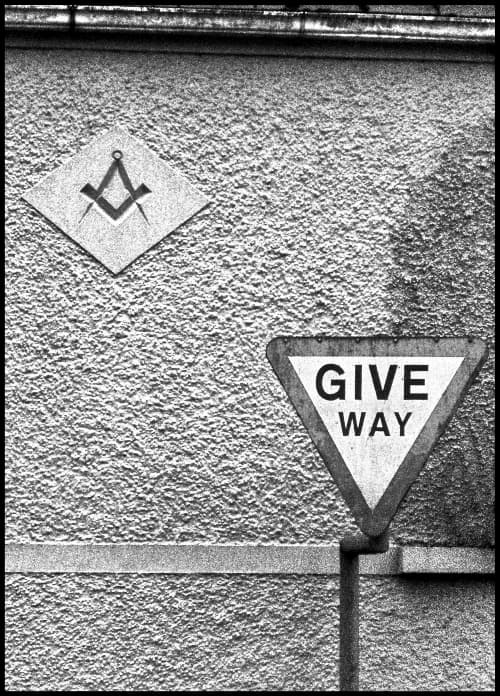
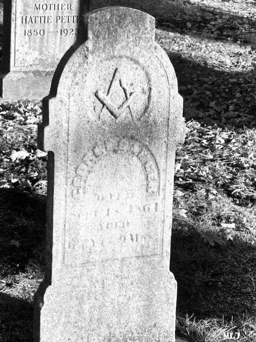

Dacă pietrele ar avea suflet, s-ar năpusti singure asupra celor răi. Dar nu au și plâng în tăcerea lor, așteptând ca lumea să-și găsească singură liniștea de la începuturi.
Tocmai când scriu aceste rânduri, cei mai puternici oameni de pe planetă discută despre viitorul meu. Peste 100 de miliardari, diplomați și capete încoronate s-au dus tocmai la Atena (n.r. întâlnirea Bilderberg, Atena, 14 – 17 mai) pentru a-l încânta pe cel rău. Lumea merge din ce în ce mai rău, așa că este timpul să-l cităm pe Roosevelt: „În politică nu se petrece nimic întâmplător! Când se întâmplă ceva, putem fi siguri că a fost plănuit!“.
Un pas către Noua Ordine Mondială
Întâlnirea din acest an a grupului Bilderberg a fost mai protejată ca niciodată. Membrii „consiliului” au avut grijă ca nimeni să nu le tulbure discuțiile. Potrivit AFP, foarte multe nave militare și bărci cu scafandri din trupele de elită s-au aflat în apropiere de coastă, gata să intervină. Grupul a cerut protecția a două avioane de luptă F-16 și a unui elicopter al poliției locale.
Nimeni nu știe precis cât i-a dus mintea, însă tot mai multe semne arată că membrii grupului vor să facă un pas înainte spre Noua Ordine Mondială, sub argumentul depresiunii economice. Un jurnalist independent specializat în reuniunile grupului, Daniel Estulin, susține că membrii grupului au discutat, în principal, chestiuni financiare, între care viitorul dolarului american, criza economică globală și ratele mari ale șomajului în diferite țări.
Ziaristul afirmă că a obținut un document al reuniunii, în care se precizează că participanții au dezbătut două variante ale actualei crize: „o depresiune prelungită și agonizantă, care va trimite lumea în decenii de stagnare, declin și sărăcie sau o depresiune intensă, dar scurtă, care pregătește drumul pentru o Nouă Ordine Economică Mondială, cu mai puțină suveranitate națională dar mai eficientă.
Democrați, dar nu la ei acasă
Este ciudat faptul că deși membrii săi susțin democrația, grupul Bilderberg nu este deloc democratic. Accesul în acest grup nu este dat decât de criteriul puterii. Formula este aplicabilă și instituțiilor considerate ca fiind fundamentale pentru societatea contemporană: Banca Mondială și Fondul Monetar Internațional. În schimb, grupul este bine structurat pe un sistem care amintește de cel al mafiei. Cercul exterior este foarte extins. Practic peste 80% din participanții la reuniuni nu cunosc decât o parte din strategiile și scopurile reale ale organizației, deci fac parte din cercul exterior. Comitetul director, al doilea nivel, este mult mai restrâns. Acest nivel este alcătuit din aproximativ 35 de membri, exclusiv europeni și americani. Ei cunosc în proporție de 90% obiectivele și strategia grupului. Membrii americani ai acestui nivel sunt de asemenea și membri în CRE – Consiliul Relațiilor Externe (în engleză Council of Foreign Relations – CFR). Comitetul Consultativ, al treilea nivel, este nucleul acestei grupări. El este alcătuit din 12 membri, singurii care cunosc în totalitate strategiile și scopurile reale ale organizației.
Cu mâna pe inimă, dar…
Foarte mulți dintre membrii grupului Bilderberg sunt masoni. Alții sunt persoane oculte, cu o mare influență, dar anonimi cu desăvârșire pentru publicul larg. Un ziarist independent american și-a propus să urmărească îndeaproape întâlnirea precedentă din Turcia. Nu s-a postat în apropierea hotelului unde trebuia să aibă loc întâlnirea, ci la aeroport, de unde îi era mai ușor să le distingă chipurile. Un avion particular i-a atras atenția. Din el a coborât un bărbat în jur de 50 ani, care era așteptat de oficiali cu capetele plecate și cu mâinile pe inimă, întocmai cum fac masonii în lojele lor. Fiind un jurnalist cu experiență, ar fi trebuit să-și dea ușor seama dacă este o personalitate a vieții publice. Zadarnic, însă.
Pentru societățile secrete, Bilderberg este calea prin care se va instaura Noua Ordine Economică. „Consiliul” a reușit să se dezvolte rapid, prin cooptarea celor mai influente persoane din politica și economia internațională. Devenind astfel un guvern virtual, care decide din umbră.
…lipsiți de dragoste…
Suntem la un pas de a trăi pe o planetă închisoare, într-o libertate iluzorie și dominați de instincte. Primii pași sunt crearea unei piețe unice mondiale, controlată de un guvern unic mondial, cu o forță polițienească mondială, falsificarea Bisericii. Vom purta microcipuri, ne vom pierde creativitatea și vom fi simple creaturi căzute în sclavie. În Noua Ordine, credința sclavului viitorului este erodată, credinciosul devine „ignorant” și este batjocorit. Semnele creștinismului dispar pe rând de pe însemnele instituțiilor statelor din întreaga lume. Uniunea Europeană se transformă într-un instrument de prigonire a creștinilor. Ne scot icoanele din școli și refuză să recunoască rădăcinile creștine ale Europei.
Această imagine seamănă izbitor cu ceea ce Sfântul Apostol Pavel a văzut pentru timpurile de pe urmă: „Pentru că oamenii vor fi iubitori de sine, nemulțumitori, necuvioși, lipsiți de dragoste, neînduplecați, clevetitori, neînfrânați, cruzi, neiubitori de bine, vânzători, necuviincioși, îngâmfați, iubitori mai mult de desfătări decât de Dumnezeu, având înfățișarea credinței adevărate, dar tăgăduind puterea ei” (2 Timotei 3,2-5).
Au băgat spaima în Ceaușescu
Societățile secrete își racolează adepții dintre cele mai influente personalități. Printre conducătorii vizați din Europa de Est se număra și Nicolae Ceaușescu. Acesta a fost abordat în 1971 de o personalitate marcantă a lumii societăților secrete, care, la invitația președintelui României, a făcut o vizită particulară la București în acel an. Reacția lui Ceaușescu a fost hotărât negativă, el respingând orice implicare în organizații secrete și în masonerie.
Un an mai târziu, Stelian Octavian Andronic, un ofițer de la Direcția de Informații Externe a Securității, a primit o dispoziție directă de la Ceaușescu, pentru a culege informații cu privire la prințul Bernard al Olandei, unul dintre inițiatorii întâlnirilor Bilderberg. Munca ofițerului nu a fost ușoară și, după cum singur susține, a aflat că „membrii grupului doresc crearea unui guvern mondial, a unei armate mondiale și a unei religii mondiale, new age”.
Andronic i-a pregătit lui Ceaușescu o notă pe două pagini pe care i-a înmânat-o aghiotantului acestuia la sosirea în Olanda, cu ocazia unei vizitei oficiale. A doua zi i s-a dat nota înapoi, cu specificația că „tovarășul a ordonat să fie distrusă, împreună cu toate materialele referitoare la acest subiect“. „Am deschis nota și culmea, pe notă era un V pus pe partea stângă cu un creion colorat și subliniat de fiecare dată Bilderberg și Bernard, Bilderberg și Bernard. Asta era o chestie diferită pentru că buletinele informative pe care i le prezentam, le primeam înapoi fără nici un fel de notă. Așa, am distrus documentele…”, spune Andronic.
Nu-și explică nici astăzi motivul, dar precizează că ulterior s-a întâlnit cu acel aghiotant, care i-a reamintit să tacă. Vă mai amintiți că în timp ce-și aștepta sentința, Ceaușescu vorbea despre trădători și „agenturile străine”? Știa foarte bine cine l-a lovit.
Nu este Dumnezeu, ci îngerul luminii
De ce sunt masonii răi? Pentru că nu-L mărturisesc pe Hristos. Doar atât. Restul e consecința păcatului lor. Ce poate fi mai rău? Într-un ritual masonic de trecere, „fratelui” i se spun următoarele cuvinte: „Marele Arhitect al Universului, în onoarea căruia arde tămâia lojelor și atelierelor, nu este Dumnezeu, ci îngerul luminii, geniul muzicii, spiritul focului”. Mai este loc de tăgadă cui se închină aceștia?
Într-o analiză efectuată de Sinodul Bisericii Ortodoxe a Greciei, masoneria este prezentată ca fiind „un sistem mistagogic care amintește vechile credințe păgâne din care provine și a căror continuare și rod este”.
În Morals and Dogma, Albert Pike scrie că „masoneria este identică cu religiile străvechi” (p. 624), iar apoi afirmă că „Lucifer este Purtătorul Luminii” (p. 321). Același Albert Pike, pe 14 iulie 1889, când a emis instrucțiunile celor 23 de Consilii Supreme Masonice, înregistrate de A. C. De La Rive în cartea sa La femme et l’enfant dans la Francmaconerie universelle, le spune colegilor de breaslă: „Vouă, Mari Inspectori Generali, vă spunem că pentru noi, cei din gradele 30, 31, 32, religia masonică trebuie păstrată în cea mai pură doctrină luciferică” (p. 588). Aceleași cuvinte au fost preluate și de Gary Kath, En route to global occupation (p. 114) și la Lady Queensborough, Occult Theocrasy (p. 220-221).
Un personaj faimos în lumea masonică, William Hutchinson, susține că „învățarea principiilor breslei noastre provine de la druizi, iar emblemele noastre principale au fost aduse din Egipt”.
(The Spirit of Masonery, revizuită de George Oliver, New York, Bill Publishing, 1775, p. 195).
Închinători la șarpe
Masonii se închină șarpelui, după cum chiar ei recunosc. Manly P. Hall le trimitea învățături fraților prin următoarele cuvinte: „Șarpele este simbolul și prototipul Salvatorului Universului, care răscumpără lumile dezvăluindu-se în fața creaturii și dăruindu-i atât binele cât și răul”. (The Secret Teachings of All Ages, the Philosophical Research Society Press, p. IXXXVIII). Un alt mason, George Oliver, este de părere că „Șarpele este considerat pe plan universal ca fiind simbolul legitim al Francmasoneriei” (Sings and Symbols, Macoy Publishing and Masonic Supply Company, New York, 1906, p. 36).
În analiza masoneriei, Sinodul Greciei menționează că: „Își are propriile ceremonii religioase, ca ceremonia adoptării – botezul masonic, ceremonia recunoașterii conjugale – căsătoria masonică, ritualul morții, consacrarea templului masonic și altele. Își are propriile inițieri, propriul ceremonial ritual, are ordine ierarhică proprie și o disciplină bine întemeiată”. Trebuie menționat faptul că la aceste hotărâri mai subscriu și unii papi, care prin bule papale condamnă masoneria, Sinodul Bisericii Ruse din Diasporă, precum și unii Cuvioși ca Părintele Paisie Aghioritul, Părintele Porfirie, Părintele Stăniloae până la duhovnici și teologi contemporani.

666
Masoneria este plină de simboluri. Toate ritualurile acestei organizații sunt pur simbolice, ca și amprenta lor în lume. Și-au lăsat urmele pe dolarul american, pe însemnele instituțiilor statelor și pe codurile de bare de pe toate lucrurile pe care le cumpărăm. La toate codurile de bare putem găsi linii subțiri scurte și linii subțiri lungi. Un grup de două linii subțiri lungi înseamnă 6. Găsim totdeauna 3 grupe de linii subțiri lungi, adică 666.
„Și i s-a dat ei să insufle duh chipului fiarei, ca chipul fiarei să și grăiască și să omoare pe toți câți nu se vor închina chipului fiarei. Și ea îi silește pe toți, pe cei mici și pe cei mari, și pe cei bogați și pe cei săraci, și pe cei slobozi și pe cei robi, ca să-și pună semn pe mâna lor cea dreaptă sau pe frunte. Încât nimeni să nu poată cumpăra sau vinde, decât numai cel ce are semnul, adică numele fiarei, sau numărul numelui fiarei. Aici este înțelepciunea. Cine are pricepere să socotească numărul fiarei; căci este număr de om. Și numărul ei este șase sute șaizeci și șase.” (Apocalipsa lui Ioan, cap. 13, v 16-18).
În Vechiul Testament putem citi (Cartea Regilor, cap. 10, v 14): „Grămada aurului care s-a adunat într-un an pentru Solomon a fost de șase sute șaizeci de talanți“.
Uniunea Europeană, copilul nelegitim al grupului Bilderberg
În Noua Ordine Mondială banii trebuie să dispară cu desăvârșire. Primul pas a fost crearea unei monede unice. Aceasta a fost propusă de Bilderberg potrivit unei investigații a celor de la BBC, care a scos la iveală documente de la primele ședințe Bilderberg care confirmau că Uniunea Europeană a fost un vlăstar al acestui grup.
Chiar și sistemele de evaluare ale puterii banilor se bazează pe apă de ploaie. Rezervele de aur au fost treptat înlocuite cu „prognoze economice” ale Federal Reserve. Cu alte cuvinte, valoarea banilor din buzunarele noastre este dată de dispoziția de moment a unui om cu un pix.
Carnetul de cecuri, cartea de credit, cartea de asigurare înlocuiesc treptat banii din buzunarele noastre. Oamenii trebuie să fie convinși că este mult mai simplu, eficient, ușor și fără risc să faci plăți cu carduri, decât cu bani. Scopul final este tatuarea prin laser sau implantarea de microcipuri. Acestea conțin cifra de cod, care se citește cu un „Scanner“. Chiar dacă nu va fi obligatoriu, nu vei avea însă altă variantă, pentru că nicăieri nu vei putea cumpăra sau plăti cu bani. Acesta este un control absolut asupra fiecărui individ. Aceasta este Noua Ordine Economică Mondială, pe care mai marii lumii au plănuit-o la întâlnirea Bilderberg de zilele trecute.

Istoria se repetă
O teorie interesantă este aceea care susține că cel de-al II-lea război mondial a fost opera înaintașilor celor care acum formează grupul Bilderberg.
În 1929, Montague Norman, președintele băncii engleze, a plecat la Washington pentru a purta convorbiri cu ministrul de finanțe american, Andrew Mellon. În urma discuțiilor s-a stabilit ridicarea de către Federal Reserve a dobânzii oficiale. Câteva zile mai târziu, Financial Chronicles scria: „dacă speculațiilor nelimitate li se dă posibilitatea de a se extinde, atunci falimentul este sigur”. Nu a durat mult și, în toamna anului 1929, bancherii internaționali au declanșat Marea Criză. Tranzacțiile la bursă au fost umflate, economia s-a prăbușit, iar SUA s-a văzut dominată de sărăcie. Germania, sărăcită de criză, rămăsese în urmă cu plățile stipulate în tratatul de la Versailles și ceruse un moratoriu. Acesta a fost respins de aliați: ca urmare Franța a ocupat regiunea Ruhr. Pe acest fond era și normal ca naționalismul să câștige tot mai mult sufletele cetățenilor germani.
Pe de altă parte, pentru masoni războiul a fost un succes deosebit. Noua Ordine a început să prindă contur. Națiunile s-au reașezat, societatea s-a rupt, morala tradițională a dispărut. Totodată, statul Israel a apărut din nimic, într-un teritoriu locuit de palestinieni.
În loc de concluzie
Membrii grupului Bilderberg ne pot decide viitorul financiar și politic. Totuși, le scapă ceva. Viitorul Bisericii lui Hristos va rămâne mereu de neatins.
Comentarii